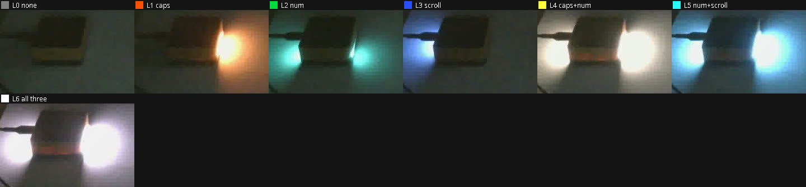
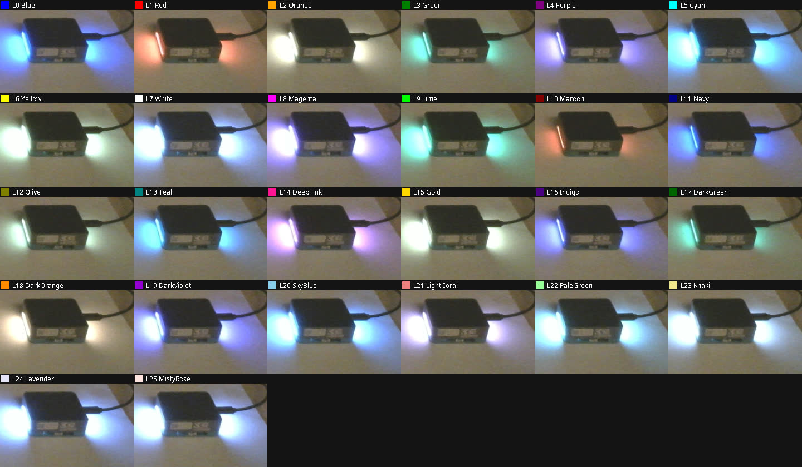
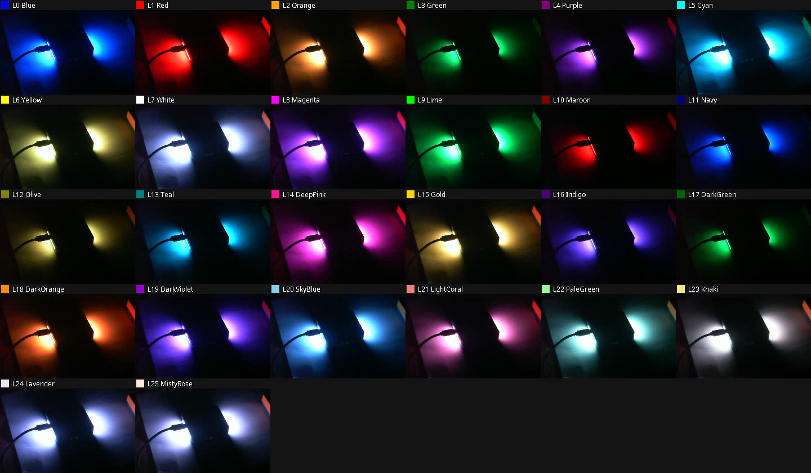

Testing the LED bars with a webcam
Testing the LED bars with a webcamDemos. The sources of the demos on this site are not publicly available. The macropad and the clicker themselves do not need them.
The LED bars are hard to test from software, so the laptop webcam does it. The tool, LedCam, is one of the demo tools: it is not part of the standard tooling (the board tools Flash, Serial, Shell and SerialTest) and its sources are not publicly available. It talks to a board over serial and films the result through Video4Linux2, in plain Java (no ffmpeg). Frame differencing uses the Java Vector API; the camera, not the arithmetic, sets the speed.
How it is run today
The tool has four commands, each started as one command in a terminal on the host that has the webcam and the board:
jbang tools/LedCam.java colours --board S3 --out DIR [--crop x0,y0,x1,y1] [--clean] jbang tools/LedCam.java locks --board S3 --out DIR [--crop x0,y0,x1,y1] jbang tools/LedCam.java dark --board S3 --out DIR [--crop x0,y0,x1,y1] jbang tools/LedCam.java pins --port /dev/ttyACM0 --out DIR
colourscycles the layers (layer 0and up) and films the bar of each; it writes a contact sheet,DIR/montage.png.lockssets every combination of the host's Caps, Num and Scroll Lock LEDs and films the Locks page lighting the bar.darkchecks thatleds offreally switches the bar off, by comparing frames of the bar on and off.pinsis the CoreS3 pin finder; it needs the separate test sketch on the board.
Common options: --port or --board, --out, --camera (default /dev/video0), --size, and for a fixed picture --exposure, --focus and --wb. --crop restricts the analysis to a rectangle around the bar, which the dark test needs. --clean removes the frames of an earlier run, and by default the bar of the other board is switched off while one board is tested (--keep-others leaves it on). The commands the tool sends are the lower-case commands of the shell, such as layer 3 and leds off. Like the other demos, it is not needed to build or use the macro pad or the clicker; the standard SerialTest checks the LED settings by their replies, without a camera.
The sections below are the history of the tests, in the order they were done.
Finding the CoreS3 bar
The CoreS3 has no documented bar pin, so a test sketch (tools/ledtest, environment cores3) drives the first pixel on every M-Bus and Grove pin in turn, showing red, green and blue, while the camera compares each frame with a dark baseline. The first sweep covered 20 candidate pins: GPIO 5 (M-Bus pin 8) scored 65 against a noise floor of 38 to 41 for every other pin, and the frame showed the bar's base glowing. A second sweep with a better score ranked it first as well. The Core2 bar sits on the same M-Bus pin, which fits.
Checking every layer colour
The tool then cycles LAYER 0 to LAYER 25 on each board and films the bar. The contact sheets below put every frame next to a swatch of the colour the firmware was asked to show. All 26 layers came out with the right hue on both boards in this first run (the rerun at the end of the page is less clear-cut). Dark colours (Maroon, Navy, DarkGreen, Indigo) are dimmer, as they should be. Pale colours (PaleGreen, Khaki, Lavender, MistyRose) look blue-white because the camera's white balance shifts when the bar is the only light in the room. The numeric check is weak (the glow is only a few brightness levels), so the verdict comes from looking at the sheets.
Core2

CoreS3

The Locks page
The Locks page lights the bar from the host's Caps, Num and Scroll Lock state: caps orange, num green, scroll blue, and an additive mix when several are on. The test sets every combination through the host keyboard LEDs and films the Core2 on a sheet of white paper, which makes the glow easy to see. All seven states come out right, including the orange of Caps Lock on its own, and white when all three are on.

Bar off means off
The dark test switches the bar off (LEDS OFF, which also cuts the 5 V rail of the base) and compares the camera with a dark baseline: the difference is 62 to 70 against a noise floor of 0.2 to 0.3, on both boards. When a board is tested, the bar of the other board is switched off too, so that it cannot light the scene.
Rerun on 22 November 2026
The tool was run again on the CoreS3, with the main room lights off, a white sheet under the board, the laptop webcam and a crop around the bar. Two things came out of it.
The tool had been broken, and it was fixed. It still sent LEDS ON, LEDS OFF and LEDS LOCKS in capitals, which the firmware has refused since its shell became lower case. Nothing failed loudly: the other board's bar was simply never switched off, and the dark test could not work. So the statement above that the other bar is switched off held for the first runs only, not for the runs in between. The tool now sends leds off and friends, and it also switches the other bar back on when a check fails (before, a failed dark run left it dark). Its picture analysis now has unit tests on synthetic images.
dark passes again, with a crop. LEDS ON against LEDS OFF differs by 66 against a camera noise of 0 to 2, and all four checks pass. Without the crop, in the dark, the whole-frame average dilutes the glow and the camera's own noise rises to about 4, so the same check fails: the numbers need the crop around the bar.
The colours are less clear than the first run suggested. The numeric check flags 14 of 26 layers, but it is weak by design, so the sheet below is the evidence. Red, Maroon, Blue, Navy, Indigo and Cyan look right; Purple, Magenta and DeepPink are all violet; Green and Lime both look mint. Orange, DarkOrange, Yellow, Gold and Olive all look near white, and the pale layers (Khaki, PaleGreen, SkyBlue, Lavender, MistyRose, LightCoral) look alike, cool and blue-white. The camera's automatic exposure and white balance saturate on the bar, so this run could not tell whether the LEDs were wrong or the camera was.

The same layers with manual camera settings
So the test was repeated in a dark room with a second webcam (a Microsoft LifeCam HD-5000 looking down at the boards), the bar's brightness lowered from 40 to 12, a short exposure (1.2 ms) and a fixed white balance (5000 K) instead of the automatic ones. LedCam now takes --exposure, --focus and --wb for this: the automatic white balance hides the colour of a bar that is the only light in the room.
The result is much better, and it shows that the white-out above came from the camera. Blue, Red, Orange, DarkOrange, Green, DarkGreen, Lime, Cyan, Teal, Navy, SkyBlue, Maroon, Gold, Yellow and Olive have the expected hue, and the violet family (Purple, DarkViolet, Indigo) does too. Magenta and DeepPink are pink-violet, and White is cool, slightly lavender. A few pale colours stay washed out: Khaki (expected cream) and MistyRose come out white or blue-white, LightCoral is pink-lavender instead of salmon, and PaleGreen is aqua instead of pale green. The core of the glow still clips a little, and the bar has no colour correction, so its blue LED probably looks strong; this run does not separate the two. The numeric verdict of the tool is of no use with this camera position: its regions of interest are hard-coded for the first camera layout, so it reads almost everything as neutral. The sheet is the evidence.
